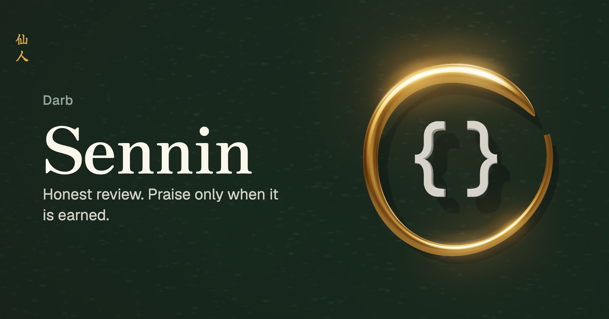
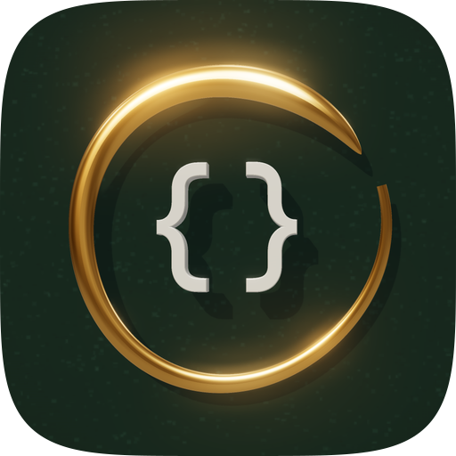
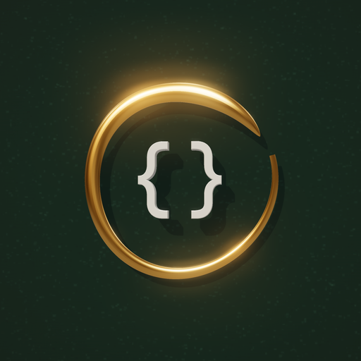
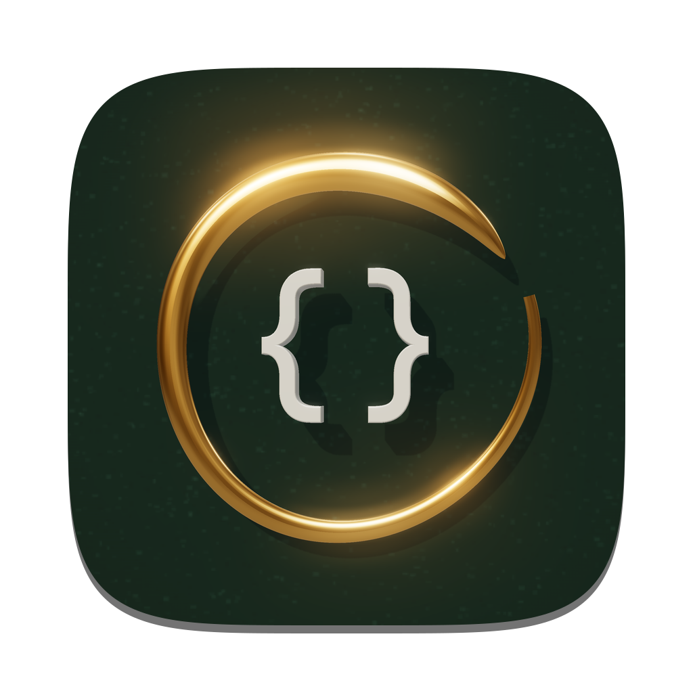
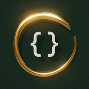

Darb
Sennin
The mark is an ensō, the Zen circle drawn in one gold stroke and left open, around a pair of code braces. Practice is a circle that never closes: you come back tomorrow and draw it again.

App icons




Marks
Wordmark
Colour
Type
仙人
Praise only when it is earned
All 14 hidden tests pass. Measured O(n log n), target O(n log n). No major findings.